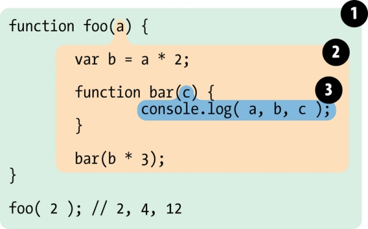

这一篇是在补英勇罹患胃炎并引发发热的某周的笔记，把这个问题留给老生常谈但久病终未成医的痼疾很合适。
主要摘自李佳怡的纸糊。
作用域
通常来说，一段程序代码中所用到的标识符并不总是有效/可用的，而限定这个标识符的可用性的代码范围就是这个标识符的作用域。
举例：
2
3
4
5
6
7
8
9function foo(a){
var b = a*2;
function bar(c){
console.log(a,b,c);
}
bar(b*3);
}
foo(2); // 2,4,12上述代码的作用域应作如下划分：

作用域1：包含全局作用域，有标识符：foo。
作用域2：包含 foo 所创建的作用域，有如下3个标识符：a、 b、 bar。
作用域3：包含 bar 所创建的作用域，有标识符：c。
在作用域3中，可以访问c，同时也可以访问作用域2的a、b。
而在作用域2中，c不可访问。
总结：函数的内部环境可以通过作用域链访问到所有的外部环境，但是外部环境却不可以访问外部环境，这就是作用域的关键。
提升
变量提升
回到最简单的一个变量声明：
1 | |
对这行代码，编译器会在编译阶段处理var a，并将a = 2留在原地等待执行阶段。这个过程就好像变量声明从它在代码中出现的位置被“移动”到了最上面，因此被称作变量提升。
举例：
1 | |
对于这段代码，首行的foo()可以正常执行，但是会输出undefined；
根据变量提升原理，这段代码实际相当于：
1 | |
函数提升
函数提升大部分与变量提升同理，但是有几点注意点：
- 函数声明会被提升，函数表达式不会被提升。
举例：
1 | |
上述代码相当于：
1 | |
- 函数会被优先提升，然后是变量。
举例：
1 | |
这段代码提升之后相当于：
1 | |
总结：变量和函数在内的所有声明都会在任何代码被执行前首先被处理。
闭包
闭包指有权访问另一个函数作用域中的变量的函数。
举例：
1 | |
bar 拥有 涵盖 foo 内部作用域的闭包，使得该作用域能够一直存活，以供 bar 在之后任何时间进行引用。
bar 依然持有对该作用域的引用，而这个引用就叫作 闭包。
下面的代码预期每秒依次输出1-5的自然数，但是由于闭包原理，timer拥有全局作用域的闭包，只会在循环结束之后执行。
1 | |
一种改正方法是使用立即执行函数：
1 | |
还有一种是使用let代替var：
1 | |